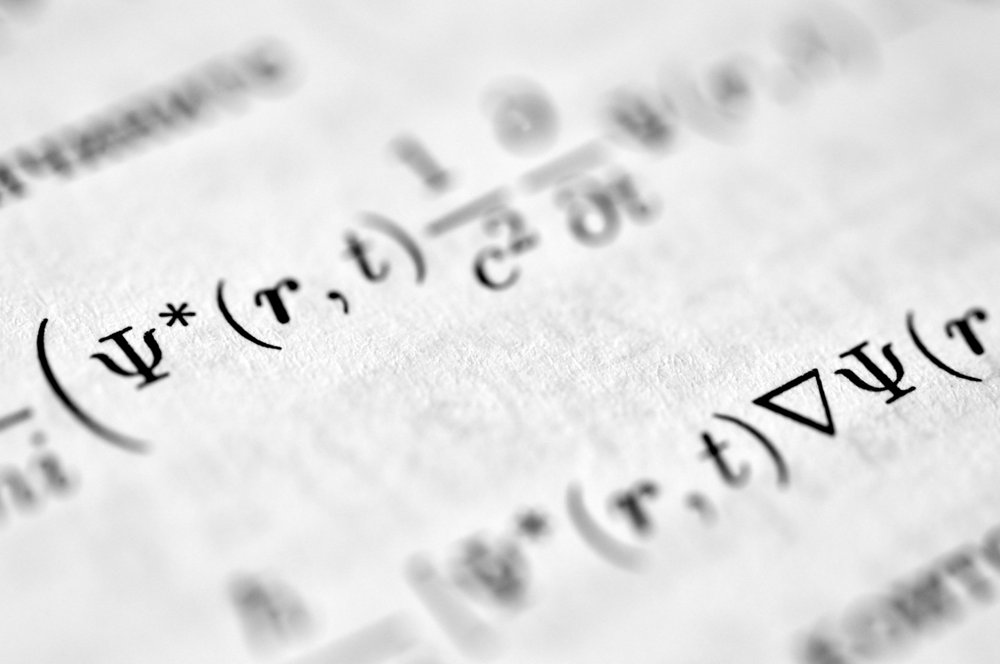
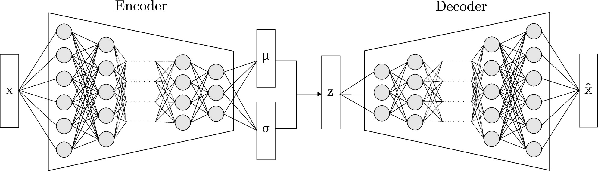

Un interlocuteur qui parle physique, données et produit.
Vos projets Data & IA croisent trois mondes qui communiquent mal : la physique de votre installation, l'ingénierie des données et l'intelligence artificielle. Le physicien parle en phénomènes, le data engineer en flux, le product owner en valeur. Personne ne traduit.
Je suis ce traducteur. Ingénieur Data & IA spécialisé dans les domaines contraints, je cadre et prototype des solutions où la physique et les règles métier contraignent l'algorithme — et je fais le pont entre vos experts métier, vos architectes données et vos product owners.
Ce que vous vivez
La réunion cours de rattrapage
L'équipe data qualité impute les trous de toutes les séries temporelles avec la même méthode. Sauf qu'un trou dans le bore (cinétique lente) et un trou dans la puissance (dynamique rapide) ne se comblent pas de la même façon. Le data engineer ne le sait pas. Le physicien ne sait pas l'expliquer en termes de pipeline. La réunion tourne en rond.
Le prototype techniquement correct mais physiquement faux
Le data scientist livre un modèle performant sur les métriques ML. Sauf qu'il prédit de la puissance quand les grappes sont chutées. Personne dans l'équipe n'a vu le problème avant la recette métier.
Le turnover qui remet le compteur à zéro
Le consultant data part au bout de 6 mois. Le suivant passe 3 mois à comprendre le domaine. L'expertise métier repart à zéro à chaque rotation — et c'est le client qui paie la montée en compétence.
Les trois langues qui ne se parlent pas
Le physicien parle en phénomènes. Le data engineer parle en flux. Le product owner parle en valeur. Personne ne traduit — le projet avance en silos et converge trop tard.
Pourquoi ça échoue
Ce n'est pas un problème de compétence. C'est un problème de structure.
L'expertise est distribuée sur une chaîne de sous-traitance où chaque maillon couvre un domaine. Le consultant data n'a pas de formation en physique des réacteurs. Le physicien métier n'a pas le vocabulaire des pipelines de données. Chacun excelle dans sa langue — mais personne ne traduit entre les trois.
La physique est traitée comme un post-traitement : on construit le pipeline, on entraîne le modèle, puis on vérifie "si ça colle" avec le métier. Quand ça ne colle pas, on itère — à la charge du client.
Le vrai levier n'est pas un outil de plus. C'est un profil qui couvre les trois mondes — physique industrielle, ingénierie des données, IA — et qui sait traduire entre eux dès la conception.
Ce que je fais différemment
La traduction
Je parle au neutronicien, au data architect et au product owner dans leur langue respective. Ce n'est pas une métaphore : j'ai conçu des pipelines où chaque variable est imputée selon sa dynamique physique propre, des Knowledge Graphs qui encodent l'ontologie métier, et des assistants IA contraints par ces graphes — en dialogue constant avec les experts de chaque domaine.
Les trois mondes
Je travaille à la croisée de la physique industrielle, l'ingénierie des données et l'intelligence artificielle. Mon métier : cadrage stratégique et prototypage Data/IA sous contrainte — physique, réglementaire ou métier — pour les domaines critiques.
Le Filtre CAP
Avant chaque engagement, le projet passe trois questions. Si le projet ne passe pas les trois, je ne le prends pas.
- Contraint — Le problème est-il borné par une loi physique, une réglementation ou un domaine de règles formelles ?
- Aride — Le sujet est-il techniquement négligé ?
- Prouvable — Puis-je livrer un prototype fonctionnel ou un livrable actionnable en moins de 3 mois ?
Le livrable
Un cadrage stratégique actionnable ou un prototype fonctionnel validé — pas un slide deck ni un démonstrateur jetable. Chaque livrable est conçu pour que l'équipe qui prend la suite parte d'une base solide.
Les Résultats
Depuis mi-2024, j'interviens en cadrage Data & IA pour la surveillance des réacteurs nucléaires du parc français.
| Résultat | |
|---|---|
| Validation automatique | 96,4 % des incohérences physiques résolues sur 11 réacteurs, 3 paliers — sans intervention humaine |
| Diagnostic IA expert | < 2 secondes en langage naturel, contraint par l'ontologie physique du domaine |
| Couverture de tests | 270+ tests unitaires couvrant chaque règle physique, chaque module, chaque cas limite |
→ Méthodologie détaillée : voir La Preuve
L'Offre — Cadrage & Prototypage Data/IA sous Contrainte Physique
Chaque situation décrite ci-dessus, je l'ai rencontrée — et résolue. Je dé-risque vos projets Data & IA en livrant un cadrage stratégique actionnable et/ou un prototype fonctionnel qui valide l'approche par la preuve, pas par le slide.
-
Cadrage "First Principles" — Je passe votre projet au Filtre CAP. Si le problème n'est pas contraint (physique, réglementation, règles formelles), négligé techniquement et prouvable en < 3 mois, je vous le dis avant de facturer.
-
Cadrage Stratégique IA — Votre produit intègre (ou veut intégrer) de l'IA, mais vous n'avez pas d'architecture cible, pas de roadmap, et le risque de faux départ est élevé. Je produis un livrable de cadrage complet : diagnostic du gap entre ambition et réalité, analyse build vs buy, recommandation architecturale (Knowledge Graph, RAG, agents), roadmap en 3 horizons avec critères go/no-go, estimation des coûts et des compétences requises. Le cadrage protège de 10 à 20 fois son prix en erreurs évitées.
-
Pipeline de validation physique — Ingestion, nettoyage, imputation et validation de vos données de capteurs. Les règles physiques de votre domaine sont codées comme contraintes de premier rang. Le prototype est conçu avec une exigence de production pour faciliter l'intégration par votre équipe de delivery.
-
Knowledge Graph métier — Modélisation de l'ontologie de votre installation : équipements, capteurs, paramètres physiques, règles de cohérence, corrélations. Ce graphe devient le socle de vérité qui contraint tout raisonnement IA en aval.
-
Assistant IA expert — Interface conversationnelle où un LLM interroge vos données à travers le Knowledge Graph. L'assistant ne peut pas halluciner sur votre domaine : il n'a accès qu'aux faits validés par la physique. Il diagnostique, recommande, extrait — en langage naturel, en temps réel.
Ce que vous obtenez : Un livrable actionnable — cadrage stratégique, prototype fonctionnel ou les deux — et la preuve mesurable que l'approche tient avant d'investir dans l'industrialisation. Preuve de valeur en moins de 3 mois.
Forfait au livrable, pas au temps passé. Je facture la valeur du cadrage et du prototype, pas les heures passées à les produire. Chaque engagement est un forfait ancré dans le résultat livré.
Pour qui : - Exploitants de systèmes critiques (nucléaire, énergie, chimie, aéronautique) - Ingénieries et bureaux d'études avec des données de procédés en séries temporelles - Startups et éditeurs SaaS dont le produit opère dans un domaine réglementé ou contraint par des règles formelles - Tout acteur dont les données ou les décisions doivent respecter des lois physiques ou réglementaires avant d'alimenter un modèle IA
Qui je suis
Boris Guarisma — Ingénieur Data & AI, micro-entreprise Qognito.io.
Mon parcours m'a placé à l'intersection de la physique nucléaire, du data engineering haute performance et de l'IA cognitive — un croisement que peu de profils couvrent. C'est cette position qui me permet de parler au neutronicien, au data architect et au product owner dans leur langue respective, et de traduire entre eux.
Ma conviction : dans les domaines contraints — industrie critique, réglementation, règles formelles — la physique et les règles doivent valider l'IA, pas l'inverse. Je ne vends pas du temps. Je facture la valeur du cadrage et du prototype, pas les heures passées à les produire. Chaque livrable protège de 10 à 20 fois son prix en erreurs architecturales, réglementaires ou techniques évitées.
Dans le nucléaire français depuis mi-2024.
Un problème de données critiques où l'IA doit parler physique ? → bguarisma@qognito.io
LA PREUVE
Le contexte
J'interviens en cadrage (Discovery) de produits numériques pour la surveillance des réacteurs nucléaires du parc français. Mon rôle : concevoir et livrer des prototypes fonctionnels qui valident l'approche Data & IA avant l'investissement d'industrialisation — dé-risquer par la preuve, pas par le slide.
Chaque prototype est conçu avec une exigence de production (tests, validation physique, architecture pérenne) pour que l'équipe de delivery qui l'intègre dans le produit final parte d'une base solide, pas d'un démonstrateur jetable.
Prototype 1 — Pipeline de Validation Physique
Le problème
Les données de capteurs nucléaires (puissance, température, bore, grappes de contrôle) arrivent brutes, incomplètes et parfois physiquement incohérentes. Des concentrations de bore négatives, de la puissance affichée quand les grappes sont chutées, des écarts entre le boremètre en ligne et les prélèvements chimistes. Sans validation physique en amont, ces données ne peuvent alimenter aucun modèle ni outil de surveillance fiable.
L'approche
Un pipeline ETL (Bronze → Silver → Gold) où chaque transformation est contrainte par la physique du réacteur — pas par des heuristiques statistiques.
- Nettoyage : chaque variable est imputée selon sa dynamique physique propre — pas de méthode générique appliquée aveuglément
- Validation : 3 règles de cohérence physique détectent les incohérences (bornage, impossibilité neutronique, cohérence chimique)
- Correction : bornage, recalage du boremètre par assimilation de données chimistes, arbitrage des arrêts mécaniques et chimiques
- Enrichissement : filtrage Kalman calibré par phase, gradients cinétiques, classification automatique de 7 phases opérationnelles
Le résultat
Pipeline validé sur 11 réacteurs du parc, 3 paliers (900, 1300, 1450 MWe). 96,4 % des incohérences physiques résolues automatiquement. 270+ tests unitaires. Architecture prête pour intégration produit.
Détails techniques
Data Lake Medallion sur Apache Arrow partitionné, moteur DuckDB zero-copy (32 threads, 32 GB RAM). Millions de points en sub-seconde.
4 modules d'imputation physique : LOCF pour les grappes (mouvement discret par crans), spline cubique pour la puissance (dynamique continue), redondance spatiale pour les températures (4 boucles corrélées), interpolation linéaire pour le bore (cinétique lente).
Filtrage Kalman (package dlm) : ordre 0 (random walk, p_factor=4.0) pour la stabilité thermique EPN, ordre 1 (linear growth, p_factor=1.5) pour le suivi de rampes en montée en puissance.
Arbre de décision physique classifiant 7 phases opérationnelles (EPN, MEP, CYCLE, TRANSIENT, STRETCH, SHUTDOWN, INVALID) à partir de ~30 constantes calibrées REP 900 MWe sur 6 domaines (neutronique, mécanique, chimie, thermohydraulique, déformation flux, cinétique).
Prototype 2 — Assistant IA Expert Nucléaire
Le problème
Un ingénieur de surveillance veut interroger les données d'un réacteur en langage naturel : "La température primaire semble instable, que faire ?" Les LLM généralistes ne connaissent pas l'ontologie nucléaire — ils ne savent pas quel capteur correspond à "puissance", quelle règle physique s'applique, quel capteur corrélé surveiller. Sans contrainte métier, l'IA hallucine.
L'approche
Un assistant conversationnel où le LLM ne raisonne pas seul — il interroge un graphe de connaissances qui encode la physique du domaine.
- Knowledge Graph modélisant l'ontologie nucléaire : réacteurs, capteurs, paramètres physiques, règles, corrélations quantifiées
- 3 outils spécialisés (Tool Calling) : recherche sémantique de capteurs, extraction haute performance de séries temporelles, diagnostic d'anomalies via les règles physiques
- Intelligence métier : substitution automatique selon la phase opérationnelle, recommandation de capteurs corrélés pour le diagnostic, adaptation au palier du réacteur
Le résultat
L'ingénieur pose une question en français, l'assistant identifie le capteur, applique la règle physique, extrait les données, recommande le capteur corrélé — en moins de 2 secondes. L'assistant ne peut pas halluciner : il n'a accès qu'aux faits validés par le graphe. Prototype validé, en attente d'intégration produit.
→ Méthodologie de conception du Knowledge Graph : lire l'article complet
Détails techniques
Knowledge Graph Neo4j : 11 réacteurs, 10 paramètres physiques, 9+ capteurs par réacteur, 5 règles physiques, 5 corrélations quantifiées. Contraintes d'unicité et index sémantiques. Requêtes < 100ms.
LLM : Claude 3.5 Haiku via ellmer (orchestration Tool Calling). Prompt système expert calibré sur le domaine nucléaire.
Visualisation : Dashboard Shiny haute performance, graphiques dygraphs interactifs, shading automatique des phases opérationnelles, marqueurs d'anomalies.
Sécurité : validation anti-injection SQL, données filtrées par le Knowledge Graph, aucun accès direct du LLM aux données brutes.
Cas d'Étude — Cadrage Stratégique IA
Le contexte
Une startup SaaS RH opère dans un domaine réglementé (droit social, conventions collectives). Son produit gère les arrêts de travail pour des entreprises clientes. L'équipe fondatrice veut intégrer de l'IA pour automatiser le parcours, mais n'a ni architecture IA cible, ni compétence interne, ni visibilité sur les risques techniques.
Le gap : l'équipe se positionne comme une "app IA native" alors que le produit repose sur un moteur de règles statique. Sans cadrage, le risque de faux départ technique est élevé — mauvaise architecture, mauvais modèle, mauvais séquencement.
L'approche
Le projet passe le Filtre CAP : Contraint (droit social, RGPD données de santé), Aride (pas de solution IA sur étagère pour ce domaine), Prouvable (livrable actionnable en 3 semaines).
Mission de cadrage complet :
- Diagnostic du gap aspirationnel : ce que l'équipe dit être vs ce qu'elle a réellement construit
- Analyse SWOT build vs buy : IA propriétaire (Knowledge Graph + LLM) vs solutions SaaS génériques, avec 8 critères de décision
- Recommandation architecturale : Knowledge Graph plutôt que RAG — le domaine est régi par des règles formelles à chaînage conditionnel, pas par des documents à rechercher
- Arbitrage souveraineté LLM : données de santé RGPD Art. 9 → recommandation d'un LLM souverain européen
- Ontologie de référence : modélisation complète du domaine (7 types de nœuds, 9 relations, exemples instanciés)
- Roadmap 3 horizons avec critères go/no-go entre chaque étape — du premier assistant simple à l'architecture multi-agents
Le résultat
Livrable de cadrage complet livré en 3 semaines. L'équipe fondatrice dispose d'une architecture cible validée, d'une roadmap séquencée avec estimation des coûts par horizon, et d'une ontologie de référence prête à être implémentée. Le cadrage protège la startup d'un estimé de 80 à 160 k€ de risque sur 12-18 mois (mauvaise architecture, embauche prématurée, perte de différenciation).
Les Principes de Conception
Ces principes ne sont pas des slogans. Ce sont les règles de conception que j'applique. Chacune est adossée à un choix technique vérifiable.
La Physique avant le Verbe (Physics First)
L'IA actuelle est probabiliste ; l'industrie est déterministe. Pour les systèmes critiques, la statistique ne suffit pas.

En pratique : Aucune donnée brute n'est confiée à un algorithme. Le pipeline valide d'abord par la physique (bornage, cohérence neutronique, recalage chimique par assimilation de données), puis impute selon la dynamique propre de chaque variable (inertie thermique, cinétique du bore, mouvement discret des grappes). L'IA intervient après cette couche de vérité physique — contrainte par un graphe de connaissances qui encode les lois du domaine.
La Sobriété comme Architecture (Data Sobriety)
Une mauvaise architecture de données est une dette énergétique et cognitive. Les détails arides — nettoyage, optimisation de flux, structures de partitionnement — sont là où se trouve l'impact réel.
En pratique : Architecture zero-copy traitant des téraoctets sans duplication mémoire. Partitionnement intelligent réduisant les données scannées d'un facteur 10 à 100x. Sub-seconde pour 1 million de points. Pas de GPU, pas de cluster — un seul serveur bien architecturé.
Le Filtre CAP (Pragmatisme de Combat)
Avant chaque engagement, trois questions.
-
Contraint — Le problème est-il borné par une loi physique, une réglementation ou un domaine de règles formelles ? Thermodynamique, neutronique, droit social, cinétique chimique — si la réalité impose une borne que l'algorithme ne peut pas ignorer, c'est mon terrain. Si le problème est purement narratif, l'IA générique suffit.
-
Aride — Le sujet est-il techniquement négligé ? La valeur réelle se cache dans les problèmes ingrats : nettoyage de séries temporelles, recalage de capteurs, validation de cohérence physique, encodage de règles métier. Si tout le monde s'y précipite, c'est déjà commoditisé.
-
Prouvable — Puis-je démontrer la faisabilité par un prototype fonctionnel ou un livrable actionnable en moins de 3 mois ? Si la donnée existe et le domaine est modélisable, je livre une preuve — pas une promesse.
Stack Technique
| Couche | Technologies |
|---|---|
| Data Engineering | Apache Arrow, DuckDB (zero-copy, 32 threads), Parquet partitionné, architecture Medallion (pins) |
| Validation Physique | Règles déterministes (neutronique, chimique, thermique), filtrage Kalman (dlm), gradients cinétiques |
| Knowledge Graph | Neo4j (ontologie métier, règles physiques, corrélations, contraintes d'unicité, index sémantiques) |
| IA Cognitive | Anthropic Claude (Tool Calling), ellmer (orchestration LLM), RAG contraint par graphe |
| Visualisation | Shiny Dashboard, dygraphs (séries temporelles interactives), Plotly |
| Qualité | testthat (270+ tests), renv (reproductibilité), validation anti-injection SQL |
| Langages | R, Python (reticulate) |
RECHERCHE
PI-VAE — Données Synthétiques Physiquement Cohérentes
Programme de recherche personnel, distinct des engagements clients.
Le problème
Les données nucléaires sont sensibles, restreintes, et les phases opérationnelles rares (transitoires, arrêts à chaud) sont sous-représentées. Entraîner des modèles ML sur ces données est soit impossible (compliance), soit biaisé (déséquilibre de classes).
L'approche — Physics-Informed Variational Auto-Encoder

-
Encodeur GRU capturant les dépendances temporelles longues (cycle de combustible) et courtes (transitoires, suivi de charge)
-
Échantillonnage MCMC dans l'espace latent pour garantir la continuité physique entre séquences générées
-
Validation physique de la génération : le modèle est évalué sur la conservation des corrélations physiques — pas sur l'erreur de reconstruction
Le statut
Stade VAE (architecture de base). Prochaine étape : intégration des contraintes physiques dans la fonction de perte et validation sur données Gold.
La valeur à terme
Un générateur synthétique validé physiquement ouvre la porte à l'entraînement de modèles sans accès aux données réelles (export, formation), à la simulation de scénarios opérationnels (stress tests), et à l'augmentation de datasets pour les phases rares.
Vision
En cours — Mission de cadrage Data & IA dans le nucléaire français. Cadrage stratégique IA pour des startups et éditeurs SaaS en domaine réglementé. Développement du PI-VAE.
À terme — Extension de l'offre (cadrage stratégique + pipeline + Knowledge Graph + assistant) comme solution reproductible pour d'autres domaines contraints. Poursuite de la R&D vers un générateur synthétique industrialisable.